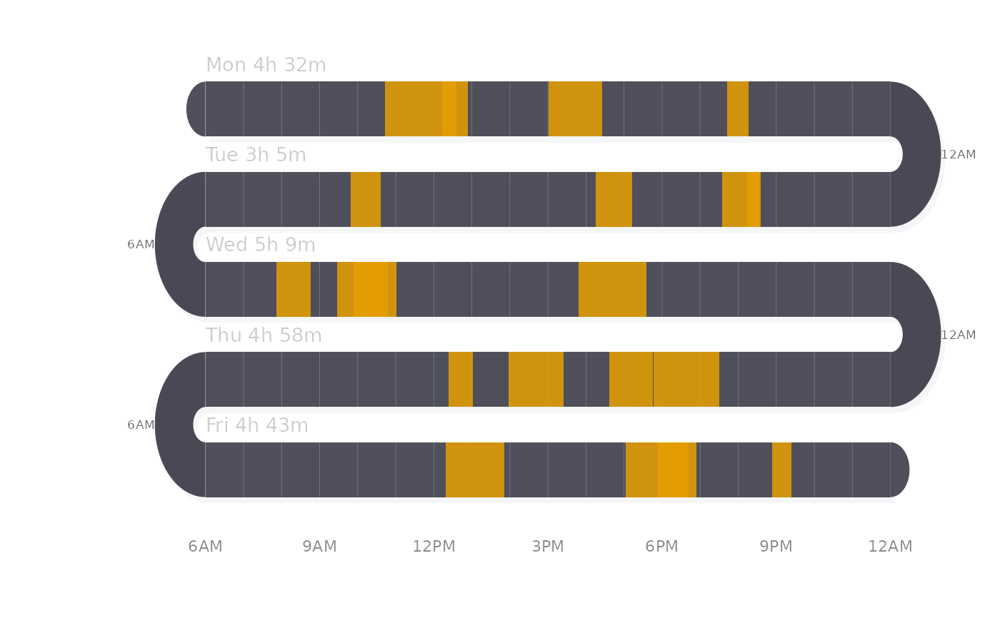

An activity snake shows when events occur over many days. Each day is a band spanning the same time-of-day window, and consecutive days are joined by U-turns, so a long run of days fits in one panel while their order is kept. Events appear as thin ticks (instantaneous events) or as blocks whose width is the event's duration, which places daily rhythms, gaps and irregular days side by side for comparison.
activity_snake() takes event times as a vector of timestamps, a data
frame of timestamps, or a data frame of day, start time and duration. It
draws one band per day on a dark ribbon, with hourly gridlines, an hour
axis, day labels carrying the day's total duration or number of events,
and the clock time at each U-turn. Bands can alternate direction
(flow = "snake") so that time runs on through each U-turn, or all read
in the same direction (flow = "natural"); the layout can be horizontal
or vertical.
The display encodes the timing of events, not their values. For a
continuous measurement through the day use line_snake(); for a sequence
of categorical states use sequence_snake(); for ratings collected at each
prompt use the var/day interface of survey_snake(). facet_snake()
draws one activity snake per group.
Usage
activity_snake(
data,
band_height = 28,
band_gap = 18,
day_start = 360,
day_end = 1440,
plot_width = 500,
band_color = "#3d3d4a",
event_color = "#d4a843",
arc_color = "#2a2a3a",
band_opacity = 0.9,
arc_opacity = 0.85,
event_opacity = 0.85,
tick_width = 1.5,
show_grid = TRUE,
show_total = TRUE,
show_count = FALSE,
show_hour_labels = TRUE,
show_arc_labels = TRUE,
shadow = TRUE,
grid_color = "rgba(255,255,255,0.25)",
label_color = "#cccccc",
label_size = 0.85,
label_align = "left",
orientation = c("horizontal", "vertical"),
start_from = c("left", "right"),
flow = c("snake", "natural"),
day_format = NULL,
legend = NULL,
title = NULL,
margin = c(top = 30, right = 10, bottom = 50, left = 80),
background = "white"
)Arguments
- data
Events, in one of three forms:
a POSIXct vector of event times;
a data frame with a POSIXct
timestamporstartcolumn, and optionally anendcolumn (POSIXct) or adurationcolumn (minutes);a data frame with columns
day(day label),start(minutes after midnight, 0-1440) andduration(minutes; 0 for an instantaneous event).
Column names are matched without regard to case, and common variants such as
start_time,end_timeordateare recognised. Character timestamps are parsed. Days appear in order of first occurrence.- band_height, band_gap
Height of each day band and gap between bands, in plot units (defaults 28 and 18).
- day_start, day_end
Time window of each band, in minutes after midnight (defaults 360, 6 AM, and 1440, midnight). When
datais a POSIXct vector, or a data frame whosetimestamporstartcolumn is POSIXct, the window is widened to whole hours covering all events.- plot_width
Length of each band in plot units (default 500).
- band_color, event_color
Colors of the bands and of the events (defaults
"#3d3d4a"and"#d4a843"). A vector of colors is recycled over days.- arc_color
Color of the U-turns (default
"#2a2a3a").- band_opacity, arc_opacity, event_opacity
Opacities between 0 and 1 (defaults 0.90, 0.85 and 0.85).
- tick_width
Minimum width of an event in plot units (default 1.5), which keeps instantaneous events visible.
- show_grid
Draw hourly gridlines (default
TRUE).- show_total
Append the day's total event duration to its label (default
TRUE).- show_count
Append the day's number of events to its label (default
FALSE).- show_hour_labels
Draw the hour axis (default
TRUE).- show_arc_labels
Print the clock time at each U-turn (default
TRUE).- shadow
Draw drop shadows (default
TRUE).- grid_color
Gridline color: an R color or a CSS-style
"rgba(r,g,b,a)"string (default"rgba(255,255,255,0.25)").- label_color, label_size
Color and size multiplier of the day labels (defaults
"#cccccc"and 0.85).- label_align
Alignment of the day labels:
"left"(default),"right", or"direction"to follow each band's reading direction.- orientation
"horizontal"(default) for bands running across the page, or"vertical"for bands running down it. The vertical layout uses smaller sizes and margins for those arguments left at their defaults.- start_from
Side on which the first band starts:
"left"(default) or"right".- flow
"snake"(default): bands alternate direction, so time runs on through each U-turn."natural": every band reads in the same direction.- day_format
strftime()format of day labels built from timestamps, such as"%a"or"%d %b".NULL(default) uses"%a"for up to seven days and"%Y-%m-%d"otherwise.- legend
Legend entries: a list of items, each a list with
labelandcolor, and optionallytype("rect", the default,"tick"or"gradient").NULL(default) draws no legend.- title
Plot title, or
NULL(default) for none.- margin
Named numeric vector of
top,right,bottomandleftmargins in plot units (defaultc(top = 30, right = 10, bottom = 50, left = 80)).- background
Background color (default
"white").
Value
The plot is drawn on the current device. The function returns,
invisibly, an object of class snake_layout: a list describing the drawn
geometry, with bands (a data frame with one row per day band giving its
index, position, and drawing and reading direction), arcs (a list with
one element per U-turn), canvas and plot_area (dimensions in plot
units), orientation, flow and params (the sizes used).
See also
line_snake() for a continuous value through the day;
sequence_snake() for categorical states; survey_snake() for ratings
at each prompt; facet_snake() for one panel per group.
Examples
# One participant's 69 prompts over 14 days of experience sampling
beeps <- subset(ema_beeps, id == "xcVDLRQOwn", select = start_time)
activity_snake(beeps, show_total = FALSE, show_count = TRUE)
 # Sessions with durations: day, start (minutes after midnight), length
set.seed(1)
sessions <- data.frame(
day = rep(c("Mon", "Tue", "Wed", "Thu", "Fri"), each = 4),
start = round(runif(20, 420, 1260)),
duration = round(runif(20, 20, 120))
)
activity_snake(sessions, event_color = "#E69F00", flow = "natural")
# Sessions with durations: day, start (minutes after midnight), length
set.seed(1)
sessions <- data.frame(
day = rep(c("Mon", "Tue", "Wed", "Thu", "Fri"), each = 4),
start = round(runif(20, 420, 1260)),
duration = round(runif(20, 20, 120))
)
activity_snake(sessions, event_color = "#E69F00", flow = "natural")
